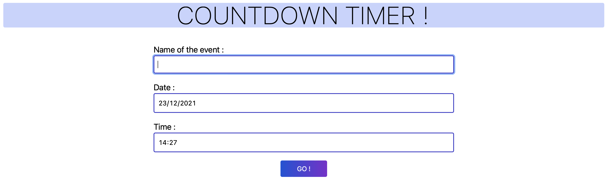
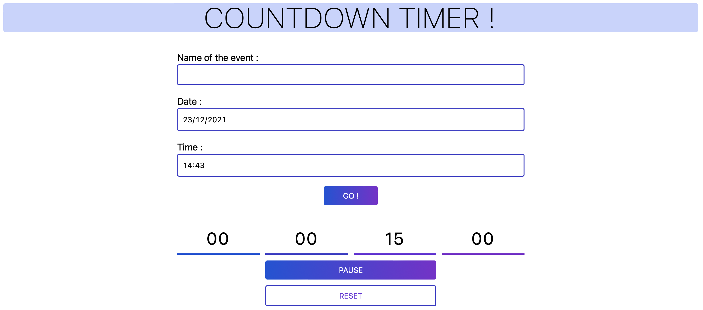

Countdown Timer
Web project

This is a personal project. In order to fill my portfolio I was inspired by this article on Medium. The first one is a countdown clock. The user will enter a date and a time in the future and by clicking on GO a countdown will start. The user can then pause and restart the countdown or reset it.
 